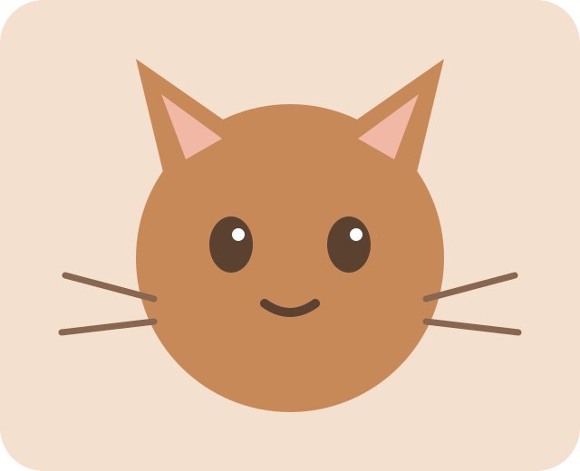

🛋️
Retreat
Spaces where a resident can disengage.
A retreat is useful only if it can actually be used without being blocked, chased or turned into a display.
A tiny living café where residents have preferences, rooms respond to their choices, and welfare is learned by observing behaviour—not by ticking boxes.

Every resident has a fictional preference model. Their profiles are a learning device: observe, offer choices, and let the cat's response change the room.
Pick a resident, then click or drag room objects. The cat reacts to the environment. There is no universal perfect room—comfort depends on the resident and their ability to choose.
Five practical pillars frame the simulation. Click a pillar to reveal why it matters; then test the idea inside the Room Lab.
Spaces where a resident can disengage.
Perches and routes create spatial options.
Food, water, rest and toileting are separated.
Novelty, play and foraging choices.
Sound, smell, touch and cleaning.
The residents have simulated daily patterns. Time, visitor load and environment alter the café state. This is a fictional prototype, not a live animal-monitoring system.
What would you do first? The simulation rewards protecting choice and reducing pressure.
In this prototype, repeated respectful choices nudge trust upward while pressure nudges it down. Resetting the page starts a fresh session.
The dashboard shows what the fictional simulation is measuring, why a metric moved, and where the data came from.
available across the demo room
2 rotated today
fictional café state
External café discovery belongs in a separate layer from fictional resident telemetry. The prototype reads a structured JSON feed and clearly labels simulated values.
Simulated resident event · choice respected
Simulated café event · puzzle feeder introduced
Simulated resident event · retreat available
Simulated operations signal · monitor sensory load
These links are educational starting points for the welfare concepts represented in the prototype. The app does not claim to diagnose or monitor real animals.
Save your favourite resident, experiment with the room, and leave a tiny note for the café wall. Everything here is local demo state—no account required.